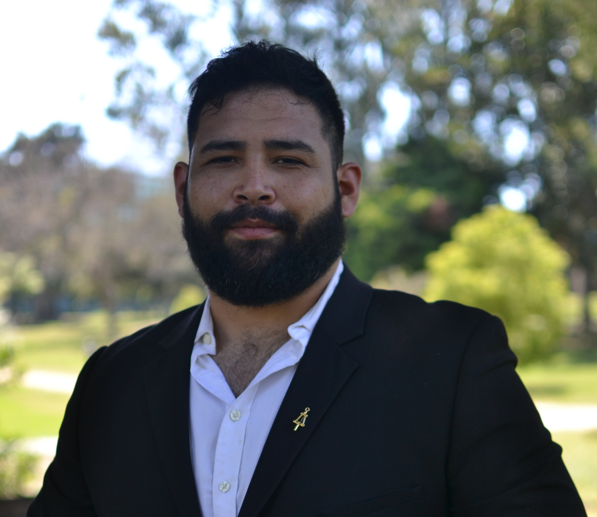

Alexander Alvara
By Olivia Jerram | August 11, 2020
Alexander Alvara posed for this photo when he graduated from UC Irvine in 2017. Courtesy: Alexander Alvara.
Name:
Alexander Alvara
Age:
35
Hometown:
In Alexander’s words, “I don't really have a hometown. I moved around a lot.”
Department:
Mechanical engineering at UC Berkeley
Research topic:
Designing microrobots and microsystems and exploring material behavior on extremely small scales.
It’s getting dark on a Monday night when Alexander Alvara calls me. I’m sitting where I always sit: on my bed, with my laptop balanced on a pile of books in front of me. Alexander is sitting somewhere in his home, too, I guess, but it really could be anywhere — over Zoom, his body is surrounded by a glowing image of the Earth that clings tightly to his shoulders and beard.
Looking back, that should have been a glaring clue. But I don’t really register how much he loves space until later, when he’s in the middle of telling me about a career fair he went to once when he was growing up. Back then, he’d walked up to someone and asked them why they didn’t have “astronaut” listed as a career anywhere.
“I think they just laughed at me,” Alexander says, laughing himself. “So ... I guess I never really thought it was possible.”
Alexander grew up in a big household with a single mother, so the way he tells it, there were a lot of things that didn’t really seem possible. Even if his dad had been around, he says, things wouldn’t have been much different because, like his mom, he’d have been at work all the time too.
“It wasn't great; it wasn't fun. I had to take care of my brothers and sisters, [so I] woke up early in the morning, got them dressed, made them breakfast, walked them to school — I had to, otherwise they just wouldn't go. And then, you know, [I’d] be late for my own classes,” Alexander says. “[After school, I’d] pick them up and then go home and cook and clean and wait for Mom to get back from her second job.”
Alexander says that this is how it was for most of the people he knew growing up around the places he lived.
“We live in a capitalist country, so the poorest people are having to do the most work and getting the least pay. … That’s just the way it goes now, unfortunately, unless we vote or overthrow,” Alexander adds, pausing for half a second. “[And] eat the rich.”
He laughs after he says all this, but by the time the interview ends, I understand that he laughs at a lot of things we both know aren’t very funny.
He laughs when he says he realized how little research professors do and how much of the responsibility is actually on graduate students to publish papers, and again when he describes having to be on call around the clock to fix design errors only days before the mechanical parts he develops go out for production. And he laughs when he talks about Mitch McConnell.
The reason we’re even talking about Mitch McConnell is kind of a long story, but it has something to do with everything in the world that needs to change.
Here is a list of other changes that Alexander is working on: requiring UC Berkeley staff, faculty and administrators to attend diversity and inclusion trainings; acknowledging students’ work for affinity or advocate groups in their bids for professorships; increasing accountability for companies with ties to immigration law enforcement that want to recruit on campus; instating consequences for faculty who are accused of sexual harassment, biases or microaggresssions.
“My goal is to say, ‘Okay, how can I help this next generation of students to be better about this, to understand that they can stand up?’ ” Alexander says. “I've had people tell me, ‘You don't belong here.’ I’ve had people say stuff like, ‘You're just here because of diversity.’ … I see these things as problems … [but] sometimes you can feel like a crazy man sitting in the street — no one understands what you're talking about, and … you're meant to feel like the things that you're doing aren't making an impact. But looking back at all the individuals, the faces of people who you're helping, is my sanity check.”
Alexander and I talk a lot about mentorship — in fact, it seems to come up at nearly every turn in our conversation. So at one point, I ask him: If you look back, was there ever someone in your life who influenced and mentored you?
“Well, growing up, not really,” Alexander says. “And then, for work,” he trails off, “not really.”
When Alexander says, “for work,” he’s referring to the various jobs he had before starting community college, including the one that led him to UC Irvine and then to UC Berkeley for his PhD.
“I got a job as a forklift driver and a warehouse worker, which was, you know, pretty normal for me — those types of jobs,” Alexander says. “I did pretty well, so they started to try to move me up and have me do more things … and essentially, that was the first time I came into contact with engineering concepts.”
But that wasn’t when Alexander actually decided to become an engineer. First, he studied psychology, then computer science. Finally, looking for something more hands-on, he settled on mechanical engineering.
Now, Alexander studies microrobotics and microsystems — in other words, he designs really, really small components that will fit into a really, really small package and still do everything that you would expect a larger system to do. This field encompasses projects related to how humans experience touch and how that functions on a microscale — that is, at sizes that require the use of a light microscope, allowing humans to see the details on a single hair or the shapes of cells.
His PhD also includes research into how materials behave under stress tests, such as high pressure and voltage, at the nanoscale — an even smaller scale that is on the order of the size of a virus or the width of a strand of DNA. Alexander’s favorite project, though, takes us back to his love of space.
He explains the increasing need for smaller satellites as more and more are sent up to orbit Earth, and he tells me that one of his goals would be to continue this sort of work with NASA someday. But ultimately, what he really wants to do is become a professor — to be a mentor.
"I'm interested in increasing diversity efforts, increasing inclusion, and increasing access to programs, and being a focal point — even a small focal point — who students can look up to,” Alexander says. “Sure, someone may have said the word ‘engineer’ [to me], but they didn't take the time to explain to me what that meant and what it meant to go from point A to point B as a person [with] low income … what it [would] take to go from literally living off of $200 bucks a month to getting into college.”
As a professor, Alexander believes he would be able to provide guidance to students in ways he wasn’t given. It would also allow him a wider platform to speak about the prejudice and injustices in academia, something we spend a long time discussing. He talks at length about his work with Bias Busters, the Latino/a Association of Graduate Students in Engineering and Science at UC Berkeley, the Society for Advancement of Chicanos/Hispanics and Native Americans in Science, and Graduate Pathways to STEM — all these groups that he volunteers his time for. But it’s something he says about this near the end of our conversation that really sticks with me.
We’re talking about microaggressions and unconscious biases, and he’s in the middle of a thought about the longevity of these issues in institutions like UC Berkeley when he interrupts himself to say something else.
“The thing is that the people who are being oppressed, that group is getting bigger and bigger, and soon you will be in that group because unfortunately, our system is not set up to support each individual. … Every person here is going to be fuel for the fire, potential collateral damage,” Alexander says. “[And] this should be the very end motivation — there should be many things that should cause you to get up and stand for what's right — but if this is the last thing on your list, make it about self-preservation, make it about yourself, that's fine — whatever gets you up and makes you realize, ‘This is going to hurt me in the future, too.’ ”
My first thought immediately after Alexander says this is that this is where I want the story to end — with this image of fire and this call for action. But later, when I revisit our conversation, I come across something else Alexander said, buried in the middle of the interview.
At this point, I’ve asked Alexander what it’s like to be a graduate student, if there are parts of his experience that stand out either as positive or negative. He’s wrapping up his thoughts and we’re about to move on, when he interjects with a second favorite part, saying that he wants “to kind of get away from the negative.”
Hearing this again, I decide this is the place to end. So here it is:
“Another favorite part … is just knowing that, barring anything catastrophic — any other … catastrophic [thing] than has already happened,” Alexander tells me, throwing in a laugh before finishing his thought. “Barring that, I am going to finish. I’m going to complete [my PhD]. And … I will eventually have a job. Whether I’m directly impacting students in my lab, or I’m working and then in my off time I’m contributing to my community, or I’m teaching at a community college or something, I know, either way, I’m going to have my job and [I’m] going to have my community engagement. … And, you know, those are the best things.”
To learn more about Alexander’s research, check out his website. To read more about some of the organizations Alexander works with, visit the websites for Bias Busters, LAGSES, SACNAS and Graduate Pathways to STEM.